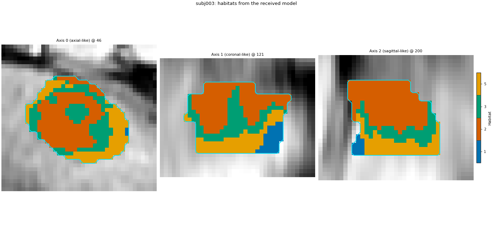

Note
Go to the end to download the full example code.
Reuse a published habitat model#
Background. A habitat definition published with a paper is a
.habitatmodel file. Whoever receives it should be able to see what
it declares (which images, which features, how many habitats, how it
was trained), know that their HABIT can read it, check that their own
data can enter its feature space, and then label their patients with
it – without refitting anything and without the authors’ code.
Purpose. You will simulate receiving such a file: train and save a
model in out/, then treat the file as a download. You will read
what it declares, see the clear error HABIT gives for a file written by
a newer format version, see the error for patient data that lacks a
modality the model needs, and finally label a new patient with it.
When to use. Before applying anyone else’s habitat model (or your own, months later) to a new cohort.
Key terms. Full definitions are on Concepts.
.habitatmodel – a ZIP archive with a JSON
manifest.json(format name and version, model id, feature columns, spec, cohort fingerprint, cohort-level preprocessing state, provenance) and the centroid matrix asarrays/centroids.npy. No pickle.format_version – the layout version of the archive. A HABIT reads files up to its own version and refuses newer ones with an explicit message.
feature space – the columns the centroids live in, here one subject-normalized and binned intensity per DCE phase. A new patient must provide every image the model’s
extractstage names.cohort fingerprint – a non-identifying description of the training cohort (number of subjects, modalities, a digest of the subject ids).
The model uses the approved analysis definition, trained on subj001 + subj002 of the 5-subject demo cohort. In real use you skip the training cell and start from the downloaded file.
Stand-in for the download: train and save a model#
In practice this cell is someone else’s work; you receive only the file written at the end of it. sphinx_gallery_thumbnail_number = 1
import json
import zipfile
from pathlib import Path
import matplotlib.pyplot as plt
import numpy as np
from habit.contracts import HabitatModel, cohort_from_directory
from habit.datasets import fetch_demo
from habit.exceptions import CompatibilityError, ProcessingError
from habit.execution import backend_from_policy
from habit.recipes import Study
from habit.spec import HabitatSpec, Spec, Stage
from habit.spec.policy import RunPolicy
from habit.viz import plot_cluster_validation_from_report, plot_habitat_overlay
# Change DATA / MODALITIES / ROI to your preprocessed layout.
DATA = fetch_demo()
MODALITIES = ("pre_contrast", "LAP", "PVP", "delay_3min")
ROI = "LAP"
cohort = cohort_from_directory(DATA, modalities=MODALITIES, roi=ROI)
Path("out").mkdir(exist_ok=True)
spec = HabitatSpec(
name="published_two_step",
stages=(
Stage("extract", Spec("raw", {"modalities": list(MODALITIES), "roi": ROI})),
Stage("preprocess", Spec("winsorize", {"winsor_limits": [0.01, 0.01]})),
Stage("preprocess2", Spec("zscore")),
Stage("partition", Spec("kmeans", {"n_supervoxels": 30})),
Stage("pool", Spec("pool")),
Stage(
"fit",
Spec(
"kmeans",
{"min_habitats": 2, "max_habitats": 10, "validation": "elbow", "n_init": 10},
),
),
Stage("assign", Spec("nearest_centroid")),
Stage("volume", Spec("volume")),
Stage("msi", Spec("msi")),
Stage("ith", Spec("ith_score")),
Stage("graph", Spec("graph", {"include_extended_metrics": False})),
),
random_seed=0,
)
published = Study(spec).fit_predict(
cohort[:2],
backend=backend_from_policy(
RunPolicy(backend="serial", on_subject_failure="continue")
),
)
published.save("out/published", write_maps=False)
HABIT demo data (cached)
DATA (preprocessed root): C:\Users\dongm\.habit_data\demo-data-v1\preprocessed
On-disk inventory of this folder:
subjects (5): subj001, subj002, subj003, subj004, subj005
image series: LAP, PVP, delay_3min, pre_contrast
mask keys: LAP, PVP, delay_3min, pre_contrast
example image: images/subj001/delay_3min/WATER__BH_Ax_LAVA_Flex_3min_Series0012.nrrd
example mask: masks/subj001/delay_3min/WATER__BH_Ax_LAVA_Flex_10min_Series0017_mask.nrrd
Your own data must use the same folder tree (change IDs / series names):
DATA/
images/<subject_id>/<modality>/<one image file>
masks/<subject_id>/<roi>/<one mask file>
Then load it with the same call the demos use:
cohort = cohort_from_directory(DATA, modalities=("LAP",), roi="LAP")
Swap DATA / modalities / roi to match your tree. Mask key is often the
same as one image series (here LAP).
Cohort.map[_ComputeUnits]: 0%| | 0/2 [00:00<?, ?it/s]
Cohort.map[_ComputeUnits]: 50%|█████ | 1/2 [00:05<00:05, 5.89s/it]
Cohort.map[_ComputeUnits]: 100%|██████████| 2/2 [00:07<00:00, 3.60s/it]
Cohort.map[_ComputeUnits]: 100%|██████████| 2/2 [00:07<00:00, 3.60s/it]
Cohort.map[_AssignPrecomputedUnits]: 0%| | 0/2 [00:00<?, ?it/s]
Cohort.map[_AssignPrecomputedUnits]: 50%|█████ | 1/2 [00:01<00:01, 1.32s/it]
Cohort.map[_AssignPrecomputedUnits]: 100%|██████████| 2/2 [00:02<00:00, 1.06s/it]
Cohort.map[_AssignPrecomputedUnits]: 100%|██████████| 2/2 [00:02<00:00, 1.06s/it]
WindowsPath('out/published')
Load it and read what it declares#
HabitatModel.load reads the archive; nothing is fitted. The model
card (summary()) and the attributes below are everything the
authors declared. The spec travels in spec_payload: it lists the
stages a new patient goes through.
model = HabitatModel.load(downloaded)
print(model.summary())
print()
print("model_id: ", model.model_id)
print("n_habitats: ", model.n_habitats)
print("feature columns: ", model.feature_names)
print("training subjects: ", model.cohort_fingerprint.n_subjects)
print("training modalities: ", model.cohort_fingerprint.modalities)
print("subject-id digest: ", model.cohort_fingerprint.subject_id_digest[:16], "...")
print("preprocessing state: ", sorted(model.preprocessing_state))
print("HABIT that wrote it: ", model.provenance.software.get("habit"))
print("spec stages:")
for stage in model.spec_payload["stages"]:
component = stage["component"]
print(f" {stage['name']:<18} {component['name']:<18} {component.get('params', {})}")
HabitatModel kmeans-3432f3b65bfec11a
habitats : 5
features (4) : pre_contrast, LAP, PVP, delay_3min
defining cohort : n=2
modalities : pre_contrast, LAP, PVP, delay_3min
cohort digest : cc1b16a34cc7478d...
produced by : habitat_model_fitter.kmeans
habit version : 3.0.0
random seed : 0
preprocessing state: inertia, selection_report, validation
model_id: kmeans-3432f3b65bfec11a
n_habitats: 5
feature columns: ('pre_contrast', 'LAP', 'PVP', 'delay_3min')
training subjects: 2
training modalities: ('pre_contrast', 'LAP', 'PVP', 'delay_3min')
subject-id digest: cc1b16a34cc7478d ...
preprocessing state: ['inertia', 'selection_report', 'validation']
HABIT that wrote it: 3.0.0
spec stages:
extract raw {'modalities': ['pre_contrast', 'LAP', 'PVP', 'delay_3min'], 'roi': 'LAP'}
preprocess winsorize {'winsor_limits': [0.01, 0.01]}
preprocess2 zscore {}
partition kmeans {'n_supervoxels': 30}
pool pool {}
fit kmeans {'max_habitats': 10, 'min_habitats': 2, 'n_init': 10, 'validation': 'elbow'}
assign nearest_centroid {}
volume volume {}
msi msi {}
ith ith_score {}
graph graph {'include_extended_metrics': False}
The format version lives in the manifest#
format_version is not an attribute of the loaded object; it is a
field of manifest.json and is checked during load. Plain
zipfile + json read it without HABIT.
with zipfile.ZipFile(downloaded) as archive:
print("members:", archive.namelist())
manifest = json.loads(archive.read("manifest.json"))
print("format: ", manifest["format"])
print("format_version:", manifest["format_version"])
print("manifest keys: ", sorted(manifest))
members: ['manifest.json', 'arrays/centroids.npy']
format: habit.habitatmodel
format_version: 1
manifest keys: ['cohort_fingerprint', 'feature_names', 'format', 'format_version', 'habit_version', 'model_id', 'n_habitats', 'preprocessing_state', 'provenance', 'spec_payload']
A file from a newer HABIT is refused, not misread#
Simulate a file written by a future HABIT: copy the archive and raise
format_version by one in its manifest (stdlib only; the library
is untouched). Loading it raises CompatibilityError with an
explicit message instead of returning a model that might be read
wrongly.
future = Path("out/published/future_format.habitatmodel")
with zipfile.ZipFile(downloaded) as source, zipfile.ZipFile(future, "w", zipfile.ZIP_DEFLATED) as target:
for member in source.namelist():
data = source.read(member)
if member == "manifest.json":
payload = json.loads(data)
payload["format_version"] = int(payload["format_version"]) + 1
data = json.dumps(payload, indent=2, sort_keys=True).encode("utf-8")
target.writestr(member, data)
try:
HabitatModel.load(future)
print("loaded (unexpected)")
except CompatibilityError as error:
print("CompatibilityError:", error)
CompatibilityError: out\published\future_format.habitatmodel was written with format version 2, but this HABIT (v3.0.0) reads up to version 1. Upgrade HABIT to load this model.
Your data must reach the model’s feature space#
The model’s extract stage names four DCE phases. Suppose your
centre has no 3-minute delayed phase. First a cheap check before any
computation: compare the modalities the model was trained on with the
images your subject has. Then see what predict does anyway: it
stops with an error naming the missing modality; it never fills in or
drops a column silently.
three_phases = cohort_from_directory(DATA, modalities=("pre_contrast", "LAP", "PVP"), roi=ROI)
incomplete = three_phases[2:3]
missing = sorted(set(model.cohort_fingerprint.modalities) - set(incomplete[0].images))
print(f"{incomplete[0].subject_id} lacks modalities the model needs: {missing}")
try:
Study.from_model(model).predict(incomplete)
print("predicted (unexpected)")
except ProcessingError as error:
print("ProcessingError:", error)
subj003 lacks modalities the model needs: ['delay_3min']
Cohort.map[_LabelAndDescribe]: 0%| | 0/1 [00:00<?, ?it/s]
Cohort.map[_LabelAndDescribe]: 100%|██████████| 1/1 [00:00<00:00, 1.14it/s][apply_habitat_model] subject subj003 failed: KeyError: "Subject 'subj003' has no modality 'delay_3min'. Available: ['LAP', 'PVP', 'pre_contrast']."
Cohort.map[_LabelAndDescribe]: 100%|██████████| 1/1 [00:00<00:00, 1.14it/s]
ProcessingError: All 1 subject(s) failed in recipe stage 'apply_habitat_model': subj003: KeyError: "Subject 'subj003' has no modality 'delay_3min'. Available: ['LAP', 'PVP', 'pre_contrast']."
Failure mode: habitats without subject z-score#
MRI baselines differ between patients. If the published model (and its training) never z-scored each subject, a new patient whose intensities sit far from the training range can collapse into one habitat. Train a deliberately broken twin of the same design (no subject preprocess), predict the same new patient, and print the real volume fractions. Then compare with the fixed model below.
new_patient = cohort[2:3]
bad_spec = HabitatSpec(
name="published_no_subject_zscore",
stages=(
Stage("extract", Spec("raw", {"modalities": list(MODALITIES), "roi": ROI})),
Stage("partition", Spec("kmeans", {"n_supervoxels": 30})),
Stage("pool", Spec("pool")),
Stage(
"fit",
Spec(
"kmeans",
{"min_habitats": 2, "max_habitats": 10, "validation": "elbow", "n_init": 10},
),
),
Stage("assign", Spec("nearest_centroid")),
Stage("volume", Spec("volume")),
),
random_seed=0,
)
bad_model = (
Study(bad_spec)
.fit_predict(
cohort[:2],
backend=backend_from_policy(
RunPolicy(backend="serial", on_subject_failure="continue")
),
)
.habitat_model
)
bad_prediction = Study.from_model(bad_model).predict(new_patient)
bad_fractions = bad_prediction.features.frame.set_index("subject").filter(
like="_volume_fraction"
)
print("WITHOUT subject winsorize+z-score — new-patient volume fractions:")
print(bad_fractions.round(3).to_string())
print(
"max fraction:",
float(bad_fractions.max(axis=1).iloc[0]),
"(close to 1.0 means collapse to one habitat)",
)
Cohort.map[_ComputeUnits]: 0%| | 0/2 [00:00<?, ?it/s]
Cohort.map[_ComputeUnits]: 50%|█████ | 1/2 [00:02<00:02, 2.01s/it]
Cohort.map[_ComputeUnits]: 100%|██████████| 2/2 [00:03<00:00, 1.68s/it]
Cohort.map[_ComputeUnits]: 100%|██████████| 2/2 [00:03<00:00, 1.68s/it]
Cohort.map[_AssignPrecomputedUnits]: 0%| | 0/2 [00:00<?, ?it/s]
Cohort.map[_AssignPrecomputedUnits]: 50%|█████ | 1/2 [00:00<00:00, 2.89it/s]
Cohort.map[_AssignPrecomputedUnits]: 100%|██████████| 2/2 [00:00<00:00, 2.81it/s]
Cohort.map[_AssignPrecomputedUnits]: 100%|██████████| 2/2 [00:00<00:00, 2.81it/s]
Cohort.map[_LabelAndDescribe]: 0%| | 0/1 [00:00<?, ?it/s]
Cohort.map[_LabelAndDescribe]: 100%|██████████| 1/1 [00:01<00:00, 1.55s/it]
Cohort.map[_LabelAndDescribe]: 100%|██████████| 1/1 [00:01<00:00, 1.55s/it]
WITHOUT subject winsorize+z-score — new-patient volume fractions:
habitat_1_volume_fraction habitat_2_volume_fraction habitat_3_volume_fraction habitat_4_volume_fraction habitat_5_volume_fraction
subject
subj003 0.065 0.845 0.0 0.0 0.09
max fraction: 0.8450292397660819 (close to 1.0 means collapse to one habitat)
Label a new patient (fixed path: subject z-score)#
The received model embeds subject-level winsorize 1% + z-score. Each new patient recomputes THEIR OWN mean and std; training mean/std are never applied. subj003 was not in the training pair.
prediction = Study.from_model(model).predict(new_patient)
habitat_map = prediction.habitat_maps[0]
print("map model_id == file model_id:", habitat_map.model_id == model.model_id)
fractions = prediction.features.frame.set_index("subject").filter(like="_volume_fraction")
print("WITH subject winsorize+z-score — new-patient volume fractions:")
print(fractions.round(3).to_string())
print("max fraction:", float(fractions.max(axis=1).iloc[0]))
fig = plot_habitat_overlay(
new_patient[0].image("LAP"),
habitat_map,
title=f"{new_patient[0].subject_id}: habitats from the received model",
crop_to="labels",
)
fig.savefig("out/published_new_patient.png", dpi=150, bbox_inches="tight")
plt.show()

Cohort.map[_LabelAndDescribe]: 0%| | 0/1 [00:00<?, ?it/s]
Cohort.map[_LabelAndDescribe]: 100%|██████████| 1/1 [00:01<00:00, 1.97s/it]
Cohort.map[_LabelAndDescribe]: 100%|██████████| 1/1 [00:01<00:00, 1.97s/it]
map model_id == file model_id: True
WITH subject winsorize+z-score — new-patient volume fractions:
habitat_1_volume_fraction habitat_2_volume_fraction habitat_3_volume_fraction habitat_4_volume_fraction habitat_5_volume_fraction
subject
subj003 0.105 0.415 0.208 0.0 0.272
max fraction: 0.41487979207277453
F:\work\habit_project\habit\viz\habitat_overlay.py:806: UserWarning: Display geometry conflict: image/anatomy direction does not match mask/label direction. Using the mask/label direction so coronal/sagittal superior-up follows the labelled anatomy. Pass direction= to override.
resolved_direction, resolved_spacing = resolve_display_geometry(
How to read the result#
Print the two fraction tables above side by side. If the broken model shows one habitat near 1.0 and the fixed model spreads mass across several habitats, you have measured the MRI baseline failure mode on this demo patient — not a toy number.
Format / missing-modality checks earlier still apply: a readable file with matching modalities is necessary but not sufficient; subject-level z-score is part of the definition that must travel with the model.
Where to go next#
Train, save and label held-out patients yourself: Train, save, and predict new patients.
Two separately fitted models need their ids matched: Same subject, two fits: prototype matching.
Export the results and write the methods paragraph: Export results and draft the methods paragraph.
Introductory two-step tutorial: Two-step habitats.
Total running time of the script: (0 minutes 22.551 seconds)